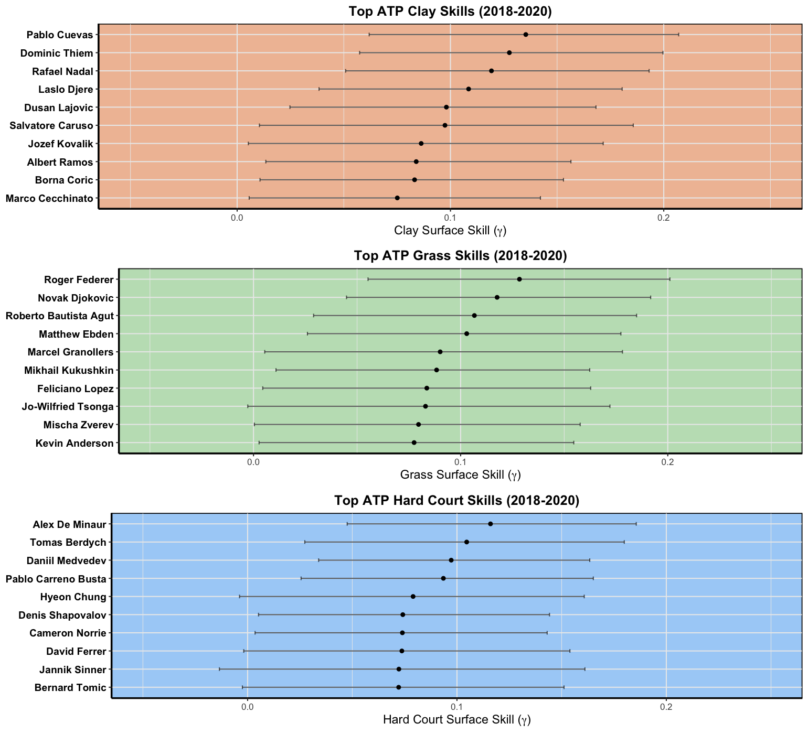
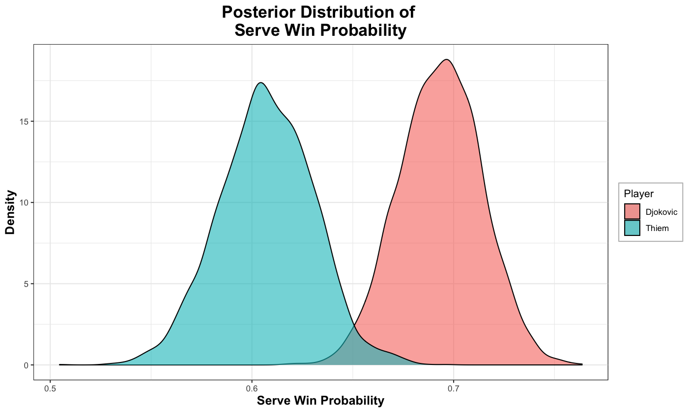

What are Point-Based Models?
Point-Based models can provide exciting and competitive insight into the game of Tennis. With them, we can answer questions like: Which team/player is favoured to win in a match-up? How unlikely is an observed upset?
In constructing point-based models, we first make some assumptions on service point outcomes - the main one being that service points are I.I.D. for an entire match. This amounts to saying that all service points in a match are played equally. With the I.I.D. assumption, (Newton and Keller 2005}) showed (using combinatorics and geometric series representations) that we can calculate the probability of either player winning the tennis match and the probability of observing specific set scores by simply knowing both players’ serve win probabilities.
Recently, Ingram (2019) proposed a Bayesian Hierarchical Model to provide posterior serve win probabilities for players in a head-to-head (singles) matchup. This Bayesian model accounts for player serve and return skills fluctuating across different periods, as well as player-specific court preferences and the tournament at which the match is being played.
For this post, I present some interesting visualizations produced from fitting this Bayesian point-based model. Tennis data curated from 2018 to 2020 (until the end of the Australian Open) from one of Jeff Sackmann’s repositories, was used to feed the model. While all necessary code to fit the model is already available on the author’s GitHub page, I’ve instead fit the model in R (whereas the author uses Python). Bayesian posterior samples were drawn using rstan, a package that uses a Hamiltonian Monte Carlo algorithm.
Who are the top skilled ATP Players?
From the posterior distribution of player serve and return skills, I’ve ranked the top 10 players for each skill based on the players’ posterior median. Below are plots representing the top 10 ATP players for serve and return skills (dots represent posterior medians, while bands represent a 90% credible interval).

In general, players will have higher serve skills than return skills since it is easier for players to win points on their serve compared to their return against the opponent’s serve. One surreal feature shown here is that Novak Djokovic’s posterior median return skill is larger than some of the top 10 players’ serve skill!
Unsurprisingly, Canadian Milos Raonic is crowned the ATP’s top server while Novak Djokovic gets the crown as the ATP’s top returner. Reassuringly, we do see that these rankings contain players who expect to be at the top (i.e. Nadal, Fed, Djokovic, etc.).
Who are the top surface ATP Players?
Next up, we’ll look at which players get the biggest boost from the 3 tennis surfaces. The following plots should be interpreted as “additional surface skill”, which were previously unaccounted for in the players’ serve and return skill plots above.

From the clay plot, Rafael Nadal (i.e. the “King of Clay”) easily cracks the top 10 players boosted from the clay surface list, as expected with his stellar career on the clay courts. From the grass plot, we round out the other 2 kings (Fed and Djokovic) who rank particularly high on this surface. Finally, for the hard-court plot, we find other top familiar names in the ATP. Surprisingly, David Ferrer (retired 2019) was ranked 8th on our list! Here, it wouldn’t make too much sense to say that a retired player would still be ranked top 10. Perhaps this anomaly may be attributed to some deft performances on hardcourt from Ferrer before his retirement.
Djokovic vs. Thiem 2020 Australian Open
Next up, I used the model to predict the Australian Open 2020 Final match played between Djokovic and Thiem. For both these players, I first obtained their posterior serve win estimates.

From the above Posterior serve win probabilities plot, we see that Djokovic (in red) has an advantage in winning his serve games against Thiem (in blue). When considering posterior medians, we would predict that Djokovic would win
just under 70% of his service games, compared to Thiem winning just under 61% of his own respective service games.
Using the posterior serve wins for both these players in the head-to-head matchup, we can then produce the posterior distribution of either playing winning the match.

From the plot above, we calculate Pr(Djokovic Winning Match vs. Thiem) has 90% credible interval of [70.4%, 98.4%] - so quite a considerable advantage for Djokovic!
With the posterior serve wins for both these players in the head-to-head matchup, we can also produce the probabilities of observing set scores in this matchup.

The most likely set score, as predicted from the model, is 6-4 and 6-3 for Djokovic.
How do these predictions stack up with what already happened? Reassuringly, Djokovic did end up beating Thiem in this match with a final score of (6-4, 4-6, 2-6, 6-3, 6-4). These observed scores mostly adhere to the most likely scores we predicted (except for the 2-6 set score, which had a 1.6% chance of occurring!)
Who’s got the best chance of winning the remaining Slams?
Unfortunately, Wimbledon has been cancelled and there will be no crowned grass champion this year. However, with the point-based models we can instead predict who has the best chances of winning at this illustrious grand slam tournament. By calculating each players’ predicted serve win probability at Wimbledon, we get that Novak Djokovic has the highest serve win probability of any ATP player, and thus is predicted to be the most likely Wimbledon champion. Besides Djokovic, who has the best chance of winning Wimbledon? Using the model, I obtain match win probabilities for ATP players against Djokovic. Here are the top 10 players with the highest match win probabilities against Djokovic:
| Rafael Nadal |
23.7 |
[ 4 - 60 ] |
| Roger Federer |
20.9 |
[ 4 - 56 ] |
| Milos Raonic |
7.7 |
[ 1 - 29 ] |
| Roberto Bautista Agut |
5.5 |
[ 0 - 30 ] |
| Stefanos Tsitsipas |
3.7 |
[ 0 - 21 ] |
| Juan Martin del Potro |
2.6 |
[ 0 - 23 ] |
| Matteo Berrettini |
2.6 |
[ 0 - 16 ] |
| Jo-Wilfried Tsonga |
2.0 |
[ 0 - 15 ] |
| Stan Wawrinka |
1.3 |
[ 0 - 11 ] |
| Andrey Rublev |
0.8 |
[ 0 - 11 ] |
Based on the model, Nadal has the highest probability of beating Djokovic at Wimbledon (23.7 % with 90% credible interval of [4%, 60%]), followed closely by Roger Federer (20.9 % with 90% credible interval of [4%, 56%]).
Let’s say (God forbid), that the remaining 2 grand slams are cancelled this year. Who would have the best chances of winning the remaining grand slams this season?
Starting with Roland Garros, unsurprisingly Rafael Nadal has the highest probability of winning service points at this tournament and is thus crowned another French Open title. How does the rest of the ATP stack up against Nadal at Roland Garros? I present the top ATP players with the highest win probabilities against Nadal at 2020 Roland Garros:
| Novak Djokovic |
28.1 |
[ 6 - 66 ] |
| Stefanos Tsitsipas |
15.5 |
[ 3 - 46 ] |
| Dominic Thiem |
9.8 |
[ 1 - 37 ] |
| Milos Raonic |
6.7 |
[ 0 - 34 ] |
| Roger Federer |
6.4 |
[ 1 - 31 ] |
| Matteo Berrettini |
4.4 |
[ 0 - 23 ] |
| Andrey Rublev |
2.9 |
[ 0 - 20 ] |
| Juan Martin del Potro |
2.7 |
[ 0 - 21 ] |
| Alexander Zverev |
2.4 |
[ 0 - 15 ] |
| Jan Lennard Struff |
1.8 |
[ 0 - 13 ] |
Here, we see that Djokovic has the highest probability of beating Djokovic at Wimbledon (28.1 % with 90% credible interval of [6%, 66%]), followed by Stefanos Tsitsipas (15.5 % with 90% credible interval of [3%, 46%]). Roger Federer falls to 5th in terms of players most likely to beat Nadal at Rolland Garros (behind Thiem and Raonic).
Ending out our hypothetical scenarios with the (usual) last grand slam tournament of the season, US Open, we find that Novak Djokovic has the highest probability of winning service points at this tournament and is thus crowned the US Open chip. How does the rest of the ATP stack up against Djokovic at US Open?
| Rafael Nadal |
28.3 |
[ 8 - 61 ] |
| Roger Federer |
17.1 |
[ 3 - 46 ] |
| Stefanos Tsitsipas |
17.1 |
[ 4 - 44 ] |
| Daniil Medvedev |
10.6 |
[ 2 - 35 ] |
| Milos Raonic |
9.4 |
[ 2 - 30 ] |
| Dominic Thiem |
8.6 |
[ 1 - 29 ] |
| Juan Martin del Potro |
8.4 |
[ 1 - 38 ] |
| Andrey Rublev |
8.0 |
[ 1 - 29 ] |
| Alexander Zverev |
5.7 |
[ 1 - 23 ] |
| Roberto Bautista Agut |
5.6 |
[ 1 - 23 ] |
Here, we see 4 ATP players with double digit probabilities of winning against Djokovic at US Open which suggests that this grand slam may be the most uncertain tournament to predict. Nadal and Federer appear to be the most likely culprits to defeat Djokovic with probabilities 28.3% and 17.1% respectively. It is very interesting to note that Milos Raonic was consistently ranked in the top 5 of players with the highest chances of winning a grand slam this season. At age 29, hopefully we will see some great things from the Canadian Ace as the season resumes!
Being up-front about the assumptions
All predictive models we make are wrong. We hope to adequately capture all underlying processes, however to fit models we have to make some simplifying assumptions. The main assumption made in fitting this model was that service point outcomes are I.I.D. for an entire match (i.e. all service points in a match are played equally). Of course, we know that the point outcomes in practice are not independent, nor are they identically distributed. Throughout a match, there exists momentum from game-to-game played which means that the outcome of a previous serve may influence the current serve. Furthermore, the performance of players on serve may differ depending on the pressure situation of the match. We may have reason to believe that our performance on the first service point compared to when we face a break opportunity may be drastically different. In fact Klaassen and Magnus (2001) showed that while the I.I.D. assumption in tennis does not hold, the effects are quite weak and thus the I.I.D. assumption may be a ``good approximation’’ for match prediction.
Another assumption made in fitting this model was that player serve and return skills follow some Gaussian random walk that change smoothly from one period to the next with equal variance. This assumption was made to account for the fluctuation of player skills varying through time. Some players may go through stretches where they play unbelievably well or unbelievably poor. Players also evolve their skills as they get accustomed to the ATP circuit, so we assume that player skills are changing from one period to the next. The Gaussian random walk assumption says that player skills are constant within a period, and changes when we jump into the next period. In fitting the model, I set each period to be 4 months long, meaning that player skills will be constant within this 4 month window, before changing as we enter the next period. However, this assumption may or may not be a true representation of how player skills evolve through time. For example, older players approaching retirement may exhibit drastic decline in skill which of course is not a smooth transition.
Data Issues
Some of the entries in the data taken from Jeff Sackmann’s repository appear to be incomplete. Some matches indicate that 0 service points were won on 0 serve point opportunities, while other entries indicate numbers that don’t make sense under a tennis match context. In a best of 3 set match, we would expect that a player should have at the very least (4 points / game) * (6 games / set) * (2 sets / Match) = 48 serves.
Some matches may have ended prematurely (ex: from player injury), and we see some entries with service games less than 48.